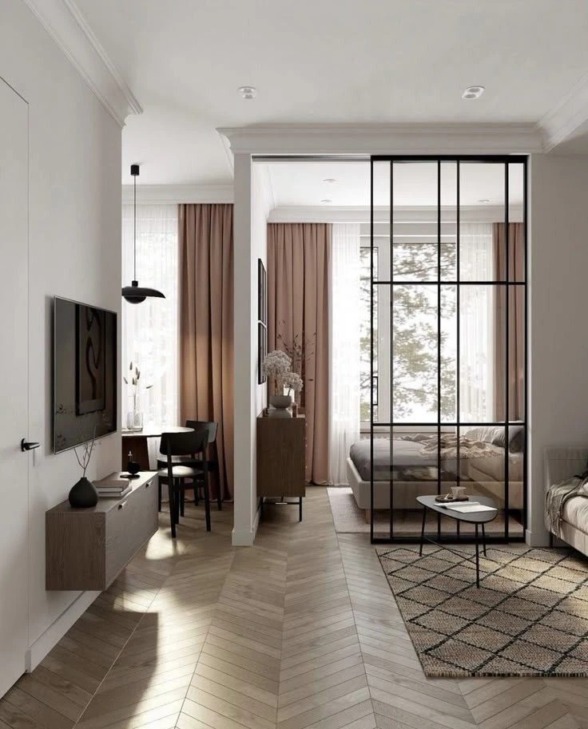

PRIVATE RESIDENCE / SHILIN
SL–GRAVIS
讓生活，
有更自在的可能。
士林帛宏客變・空間提案
從一張平面圖，慢慢找到家的樣子。
DESIGN PROPOSAL2026.10.31

LIGHT / TEXTURE / LIVING空間氛圍參考
A SPACE THAT FEELS LIKE YOU
THE CONVERSATION STARTS HERE
先想像生活，再決定空間。
這次，我們從配置、氛圍與機能出發。
一起比較每種可能，把喜歡的細節留下來。
01 / LAYOUT STUDY
把日常，放進平面裡。
從建商配置到四個提案，
一起看看動線、收納與生活的關係。
點擊圖面可全螢幕檢視・放大後可拖曳移動開啟原始 PDF ↗
目前偏好的方案尚未選擇
02 / MOOD & MATERIAL
家的氣質，藏在細節裡。
透光的界線、溫潤的木紋，
以及一點恰到好處的藍灰。
02溫潤有序，
THE MOOD BOARD
溫潤有序，
輕透而安定。
以本次選入的參考圖片，探索玻璃、木質與中性色的搭配。讓光線延續，也保留各自生活的餘裕。
WARM WHITE / OAK / BLUE GREY
YOUR PREFERENCE
哪些細節，讓你想帶回家？
逐張選擇直覺感受，也可以留下一句業主的想法，作為下次討論的起點。
圖片為本案提供的風格與材質參考，並非本案完工照片。選擇會保存在此瀏覽器，可於頁尾整理成討論摘要。
03 / SMART LIVING
讓空間，跟著生活轉換。
特殊五金，讓空間的使用
隨生活需要自由轉換。
FOLD-DOWN BED SYSTEM下掀床
下掀床
進口五金
透過影片一起了解床體的收放方式，以及空間在不同使用情境下的轉換。
- 一起討論
- 日常使用與收床頻率
- 配置檢討
- 展開範圍與周邊動線
- 後續確認
- 型號、尺寸與安裝條件
ROTATING TABLE SYSTEM旋轉桌
旋轉桌
五金機能
從收合到展開，透過影片觀察桌面的轉換方式，一起討論不同使用情境下的空間安排。
- 一起討論
- 用餐、工作與臨時桌面需求
- 配置檢討
- 旋轉範圍與周邊通行空間
- 後續確認
- 桌板尺寸、支撐與安裝條件
影片為五金機能參考；實際規格與可行性，依選定產品及現場條件確認。若播放器無法播放，可使用 YouTube 連結。
OUR NEXT CHAPTER
把今天的喜歡，留下來。
選擇不必一次到位。
先留下方向，再一起把細節完善。
01 / 偏好配置尚未選擇方案
02 / 風格與材質
選擇圖片喜好後，會在這裡彙整。
僅保存在此瀏覽器，不會自動傳送。可複製或下載摘要交給設計師。